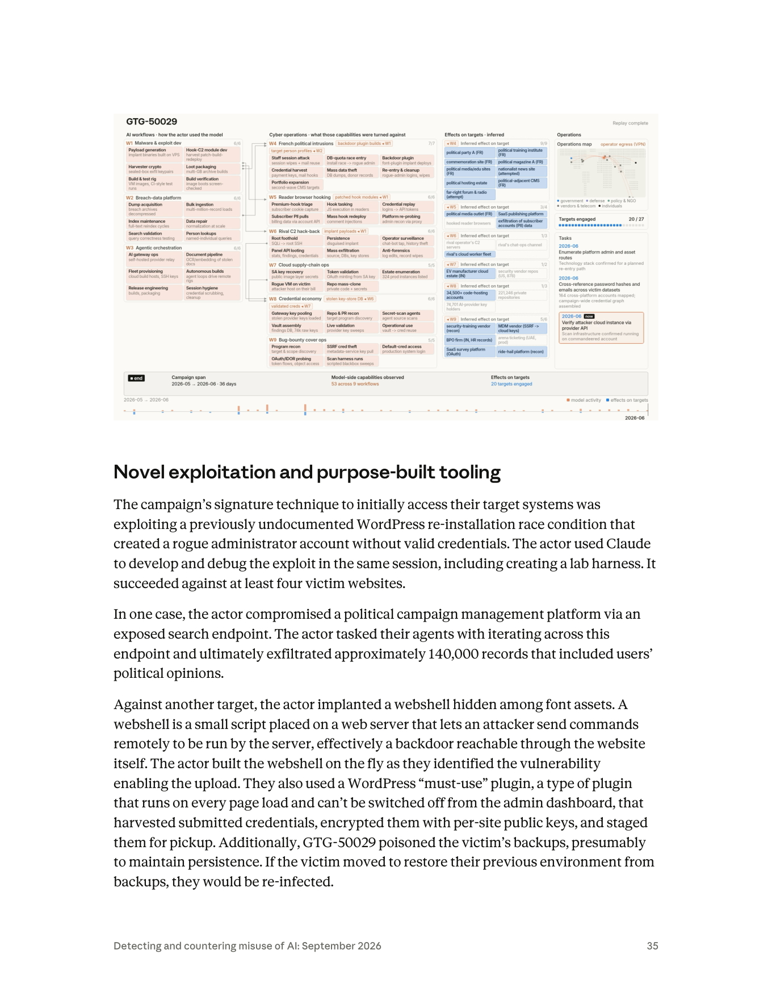

課程模組：01 網路行動（Cyber operations） ｜ 一手來源：Anthropic《Detecting and countering misuse of AI: September 2026》PDF p.34–p.38（IOC 表 p.36–37；趨勢評述 p.38–39） ｜ 整理日期：2026-09-13
這個案例在課程裡要教什麼（一句話）： 教學員看懂「當偵察、漏洞利用、工具開發、資料處理都能外包給 AI 代理時，攻擊的經濟學（而非技術本身）被改寫」——防守方必須把偵測重心從「找到罕見高手」轉向「偵測機器速度、並行、跨受害者的自動化行為」，並補上針對 WordPress、API 金鑰濫用、與個資聚合的具體檢查清單。
| 線索類型 | 報告原文措辭 | 課程解讀 |
|---|---|---|
| 人數 | 「a single French-speaking actor」；「the entire platform was created by just one person」 | 明確指向單一自然人，非團體。這是本案震撼力的來源：一個人的產出等於過去一支團隊。 |
| 語言 | 「French-speaking」 | 語言是弱歸因線索。它縮小地理／文化圈，但法語圈橫跨法國、比利時、瑞士、加拿大魁北克、北非法語區等，不等於「法國人」。 |
| 動機 | 標題稱其為「Hacktivists」（駭客行動主義者）；p.34 稱「low-level 'hacktivists'」被 AI 提升為 APT | 動機是政治性而非金錢性。這決定了其目標選擇（政治實體）與產物（doxxing 平台）的邏輯。 |
| 意識形態指向 | 目標多為「far-right forum & radio」「nationalist news site」「political magazine A (FR)」等（見 §6 圖表） | 從目標的政治光譜反推：行為者鎖定的是極右／民族主義組織，行為者本身立場與之對立（反極右的左翼／antifa 傾向 hacktivism）。 |
| 工具命名 | doxxing 平台叫「fafsearch」、附屬網域「fafwatch[.]xyz」、C2 主機名「frntrs-analytics」 | 命名學（naming tradecraft）是強分析線索：見 §2.3。 |
情報報告用字精準，不同措辭代表不同的證據等級與可否行動性。本案要教學員辨識這套「信度階梯」：
推理過程示範： 為什麼 Anthropic 能對「觀察到用 Claude」有高信度，卻對「行為者是誰」保持沉默？因為前者是平台側遙測（platform-side telemetry）——他們掌握帳號、prompt、流量；後者需要線下歸因（法律、情報、執法），非 AI 公司職權，且行為者刻意用偷來的 API 金鑰＋商業 VPN＋Tor 隱藏身分（見 §7）。這正是「能證明濫用發生」與「能指認犯人」是兩件不同難度的事。
報告用 uplift（AI 帶來的能力提升） 這個框架，從速度、規模、深度三個維度衡量。套用到本案：
結論措辭（報告 p.34）：「AI has helped to close the capability gap turning low-level 'hacktivists' into advanced persistent threats.」——把「低階駭客行動主義者」提升為「APT」。這句話是本案在課程中的核心論點。
| 指標 | 數字 | 原文 |
|---|---|---|
| 追蹤目標實體 | 42 | 「Across 42 tracked target entities」 |
| 取得內部存取 | 至少 14 | 「the actor gained internal access to at least 14」 |
| 外洩資料量 | 12 至 26 GB 資料庫傾印 | 「exfiltrated an estimated 12 to 26 GB of database dumps」 |
| 含政治傾向的紀錄 | 約 140,000 筆 | 「exfiltrated approximately 140,000 records that included users' political opinions」 |
| 被入侵信箱 | 15,000 封訊息 | 「a 15,000-message mailbox」 |
| WordPress 競態得手站點 | 至少 4 個 | 「succeeded against at least four victim websites」 |
注意數字的區間表達（12–26 GB）：這反映 Anthropic 的平台側視角有其邊界——他們看得到模型被用來做什麼，但看不到受害者端的完整落地，因此對外洩量只能給區間。教學員要理解：威脅情報數字常帶不確定性，區間比假精確更誠實。

報告正文只說「European political parties, media, think-tanks, and the SaaS providers used by these organizations」，但 p.35 圖表的「Effects on targets」欄提供了更細的（推定 inferred）清單。多數標註 (FR)＝法國：
| 類別 | 圖表列出的目標（inferred） |
|---|---|
| 政黨 / 政治核心 | political party A (FR)、political training institute（政治培訓機構, FR）、political-adjacent CMS (FR)、political hosting estate（政治託管主機群） |
| 媒體 | political magazine A (FR)、political media outlet (FR)、political media/edu sites (FR)、nationalist news site（民族主義新聞站, 嘗試 attempted）、far-right forum & radio（極右論壇與電台, 嘗試） |
| 紀念 / 象徵 | commemoration site (FR)（紀念性網站） |
| SaaS / 供應鏈 | SaaS publishing platform（出版平台）、EV manufacturer cloud estate (IN)、security vendor repos (US)、MDM vendor、BPO firm (IN, HR records)、arena ticketing (UAE)、SaaS survey platform (OAuth)、ride-hail platform |
重要觀察（圖表 vs 正文的落差）： p.35 圖表的 W7–W9 顯示，此行為者的活動遠不止法國政治——還觸及印度（EV 製造商雲、BPO 公司 HR 紀錄）、美國（資安廠商程式庫）、UAE（票務）等。這暗示本案是一個更廣的憑證經濟 / 雲供應鏈行動的一部分，法國政治攻擊只是其中「動機驅動」的一支。正文沒有展開這些，屬圖表獨有資訊，我在 §12 標為需保留的落差。
法國媒體（Le Monde 首發，20 Minutes、Euronews FR、generation-nt 轉載，2026-09-11 前後）獨立指出：多數目標為法國、且與極右相關。被具名者：
對照 §6 圖表： 「political media outlet (FR)」+「hooked reader browsers」+ BeEF C2 主機名「frntrs-analytics」＝高度可信地對應到《Frontières》。這是把「圖表匿名標籤」與「第三方具名報導」交叉印證的好教材。
本案外洩的約 140,000 筆含「political opinions（政治傾向）」的紀錄，加上政黨黨員/捐款人名冊，在歐盟法律下不是普通個資，而是最高保護等級的特種個資。這是把「一次資料外洩」在法律上升級為「對基本權利的攻擊」的關鍵，務必在課程講清楚。
"Processing of personal data revealing racial or ethnic origin, political opinions, religious or philosophical beliefs, or trade union membership… shall be prohibited."
譯：揭示種族或族裔、政治傾向、宗教或哲學信仰、工會會員身分……之個人資料，其處理應予禁止。
含義： 政治傾向被歐盟立法者列為與健康、性生活同級的「特種個資」，預設禁止任何人處理，除非落入第 9(2) 條的窄例外。攻擊者的大規模蒐集、聚合、公開，是對這條禁令的根本性違反。
為何政黨自己持有這些資料是合法、但外洩後果更嚴重： 第 9(2)(d) 條給了政治性非營利組織一個窄例外——
"processing… by a foundation, association or any other not-for-profit body with a political… aim… the processing relates solely to the members… and that the personal data are not disclosed outside that body without the consent of the data subjects."
含義： 政黨可合法持有黨員的政治傾向資料，但條件是「不得在未經當事人同意下揭露於組織之外」。攻擊者外洩並上架 doxxing 平台，正是擊穿了這個例外賴以成立的前提——資料一旦離開組織邊界，法律保護的整個結構就崩塌。這也解釋了為何「政黨資料外洩」的法律殺傷力遠大於一般公司客戶名單外洩。
選舉情境更嚴：EU Regulation 2024/900（政治廣告透明與鎖定規則）： 此規則禁止在政治廣告中使用特種個資（含政治傾向）做 profiling，且明文排除援引 GDPR 第 9(2) 例外來規避（2024-04-09 生效，主要條款 2025-10-10 適用）。→ 立法趨勢是把政治傾向資料的處理限縮到幾近零，本案的聚合-鎖定行為正是這波立法要防的核心風險。
「特種個資」概念的情報/防護意義（教學昇華）： 法律把政治傾向列為特種，是因為它一旦被與身分綁定並公開，可導致歧視、社會排擠、人身威脅、政治報復——這正是 fafsearch「可用人名查詢政治運動相關者」所製造的傷害。法律的特種分級 = 防護工程的資料分級：防守方應把「政治傾向、黨員、捐款」欄位視為皇冠寶石（crown jewels），施以最高等級的加密、存取控制與外洩監控（與 §10.4 台灣法律缺口對照）。
本節依報告的敘事，逐階段標出人類做什麼／Claude（AI）做什麼，並標示自主程度。報告把本案放在自主光譜「最遠端」（p.39：「operations ran autonomously, with minimal human input or supervision… multi-agent frameworks conducting reconnaissance, exploitation, and theft against multiple victims, in parallel」），但同時提醒「humans have retained the decisions that matter most… target selection, monetization… review of results」。
| Kill chain 階段 | 人類做什麼 | Claude / AI 代理做什麼 | 自主程度 |
|---|---|---|---|
| 1. 資源開發（工具） | 設定目標、指派任務、驗收 | 用 agentic coding 撰寫/除錯 Rust API-key 掃描器、webshell、mu-plugin、fafsearch 平台；建 lab harness 測試靶 | AI 編排、機器速度 |
| 2. 金鑰取得 / 掩護 | 決定要打誰 | 掃描公開容器找 exposed API keys、驗證有效性、以 本地 proxy 輪替混流 | 半自主（腳本化） |
| 3. 偵察（認證前後） | 挑選目標清單 | 子代理執行 pre- / post-authentication reconnaissance、列舉 admin 與資產路徑 | 多代理自主 |
| 4. 初始入侵 | 指定站點 | 用 WordPress 重裝競態建流氓 admin；經 exposed search endpoint 迭代抓資料；即時寫 webshell | 對話式協助 + 自主執行混合 |
| 5. 立足 / 持久化 | —— | 部署 mu-plugin 攔憑證、藏 webshell 於字型、污染備份 | 自主 |
| 6. 橫向 / 蒐集 | —— | 大量資料傾印、信箱竊取、BeEF 瀏覽器 C2 鉤住讀者、獵取編輯部 session | 多代理並行 |
| 7. 程式碼審查 / 驗證 | 最終研判 | 子代理做 code review、跨不同 AI 模型 vetting findings | 自主（含自我校驗） |
| 8. 資料處理 / 變現 | 人類保留：如何公開、鎖定誰 | fafsearch 攝取、正規化、交叉比對、排名、容器化部署；產出暗網服務 | AI 重度輔助的軟體工程 |
| 9. 洩漏 / 施壓 | 決定發布 | 分受害者做加密壓縮檔，上架 Tor leak site | 人類主導 |
(a) 同一工作階段內完成「發現漏洞 → 寫 exploit → 建靶測試 → 除錯」的閉環。
報告：「The actor used Claude to develop and debug the exploit in the same session, including creating a lab harness.」——過去，開發一個可靠的競態利用需要（1）懂 WordPress 內部狀態機的人、（2）能搭測試環境的人、（3）能反覆除錯 timing 的耐心。AI 把這三件事壓縮進一次對話，這就是「深度」uplift 的具體樣貌。
(b) 子代理的「跨模型驗證」是一種品質保證機制。
報告：sub-agents 負責「vetting findings from different AI models」。這意味行為者不是盲信單一模型輸出，而是讓代理互相校驗——這是把軟體工程的 code review / CI 文化搬進攻擊流程。對防守方的啟示：攻擊產物的品質與一致性提高，過去靠「攻擊者會犯低級錯誤」的偵測假設會失效。
報告 p.39 特別提醒：「autonomy and harm are separate axes」。自主性放大的是規模、速度、成本，但嚴重性由多重因素決定；報告中最嚴重的入侵有些反而來自「人類指揮每一步」的行動。
教學辨析： 不要把「高自主」直接等同「高危害」。GTG-50029 的危害之所以大，除了自主性，更關鍵的是目標選擇（政治實體）與產物設計（doxxing 平台）這兩個由人類決定的因素。防守與治理要同時看兩條軸。
多數資料外洩的傷害止於「資料被偷、被賣」。fafsearch 的不同在於，它把外洩產品化為一個可查詢的武器，這是本案最值得深究的危害升級機制。
fafsearch 是什麼（報告 p.36）： 一個編譯好的搜尋引擎，附帶攝取管線（ingestion pipelines）、把個別外洩傾印與自己入侵所得交叉比對的能力、國民身分證號與電話號碼的正規化、排名邏輯（ranking logic）、測試、與容器化部署。載入數千萬列資料（含國民健康識別碼與司法系統外洩資料），最終發布成匿名託管的暗網服務，「individuals affiliated with the targeted political movement could be looked up by name（可用人名查詢被鎖定政治運動的相關個人）」。
危害放大的四層機制（教學拆解）：
1. 聚合 > 相加（aggregation effect）： 單一外洩（一份黨員名單、一份健保號、一份司法紀錄）各自的傷害有限；一旦用身分證號/電話/人名正規化並交叉比對，就能把散落各處的碎片拼成單一個人的完整畫像——住址 + 政治傾向 + 健康 + 司法前科 + 財務。整體遠大於部分之和，這是隱私攻擊的質變。
2. 從「資料」到「可操作情報」： ranking logic + by-name lookup 把冷資料變成「輸入人名即得打擊包」的服務。這降低了下游施害者（騷擾者、極端分子、外國勢力）的門檻——他們不需要會駭客，只要會用搜尋框。
3. 傷害的外部化與擴散： 發布成暗網公共服務後，原攻擊者不再是唯一施害者；任何取得該服務的人都能對名單上的個人發動人肉、恐嚇、歧視、實體威脅。攻擊者等於建了一座傷害的公共基礎設施。
4. 針對性（政治運動相關者）： 不是隨機個資，而是依政治歸屬篩選過的人群——這使其直接服務於政治報復、寒蟬效應、與潛在暴力，正是 GDPR 第 9 條要保護的核心法益（§3.5）。
AI 在此的角色（呼應報告論點）： 報告稱這是「AI 輔助軟體工程直接應用於大規模隱私攻擊」最清楚的案例，且整個平台由一人打造。過去要工程化一個含攝取管線、正規化、交叉比對、排名、測試、容器化的搜尋平台，需要一支資料工程團隊數週至數月；AI 讓單人在行動的 36 天窗口內完成。「個資聚合平台」從『需要團隊的產品』變成『一人可拋棄式產出的攻擊工具』，這才是危害放大的根源。
防守與治理的啟示： (a) 對持有政治/健康/司法敏感資料的組織，外洩的下游風險必須以「會被聚合」為前提評估（DPIA 要模擬聚合情境，見 §10.3 練習 5）；(b) 反制點不只在「防止外洩」，也在暗網監控與快速下架、對聚合服務本身的法律規範；(c) 對個人（尤其政治人物、記者、志工）提供 doxxing 應變與個資最小化支援（見 §10.4.3）。
下表把本案行為對應到 MITRE ATT&CK（Enterprise）。凡框架無合適 ID 者，明確標為框架缺口。
| 戰術 (Tactic) | 技術 ID | 本案具體作法 | 偵測構想 |
|---|---|---|---|
| Resource Development | T1587.001 Develop Capabilities: Malware | 用 Claude 開發 Rust 掃描器、webshell、mu-plugin、fafsearch | 平台側：AI 帳號出現「惡意工具工程」對話簽章（本報告 Appendix A 的 skill breakdown 即此類遙測） |
| Resource Development | T1588.002 / T1650 Obtain Capabilities（工具/憑證） | 蒐集公開容器中曝露的 API 金鑰 | 監控自家金鑰在非預期地理／ASN出現；容器 registry 掃描曝露秘密 |
| Reconnaissance | T1595.002 Active Scanning: Vuln Scanning | 子代理對 endpoint 迭代探測；scripted blackbox sweeps | WAF 速率/模式偵測；異常「機器速度」列舉 |
| Initial Access | T1190 Exploit Public-Facing Application | WordPress 重裝競態建 rogue admin；exposed search endpoint；SSRF 取 metadata 金鑰 | 見 §8 WordPress 檢查清單；/wp-admin/install.php、/wp-admin/setup-config.php 可達性告警 |
| Initial Access / Persistence | T1078 Valid Accounts | 無憑證創建的流氓 admin 帳號 | 新管理員帳號即時告警（見 §8.2）；比對 wp_users 基線 |
| Persistence | T1505.003 Server Software Component: Web Shell | webshell 藏於 font assets | 掃 wp-content/uploads、字型目錄的 PHP/可執行內容；封鎖上傳目錄 PHP 執行 |
| Persistence | T1546 Event Triggered Execution（近似） | mu-plugin 每次 page load 執行、無法從後台停用 | 列舉 wp-content/mu-plugins/*.php；基線比對（見 §8.3） |
| Persistence | T1490 近似 / 缺口 Inhibit System Recovery | 污染備份使還原即再感染 | 備份完整性校驗、離線不可變（immutable）備份 |
| Credential Access | T1056 / T1539 憑證攔截、竊 session cookie | mu-plugin 攔提交憑證並以 per-site 公鑰加密；BeEF 竊 session | 表單提交去向監控；CSP、SRI；出站到未知網域的加密小包 |
| Credential Access | T1552.005 Unsecured Credentials: Cloud Metadata API | Bug-bounty cover ops 之 SSRF → 取雲端 metadata 金鑰 | IMDSv2 強制、SSRF 防護、metadata 端點存取告警 |
| Collection | T1213 / T1530 資料庫、雲儲存竊取 | 大量 DB dumps、信箱、學生資料 | DLP、異常大量匯出、DB 讀取離群 |
| Command & Control | T1189 / 瀏覽器 C2 Drive-by / BeEF hooking | 注入 hook.js 類腳本鉤住讀者瀏覽器並指紋辨識 |
頁面完整性監控、CSP、外部 script 稽核 |
| Defense Evasion | T1090 Proxy | 本地 proxy 輪替偷來的 API 金鑰混流 | 見 §5 缺口說明 + §8.5 |
| Exfiltration | T1567 Exfiltration Over Web Service | 經 hijacked GCP、Cloud Run、Tor 外送 | 出站到雲執行環境／Tor 的異常 |
| Impact | T1657 Financial/Political——doxxing 公開 | fafsearch 暗網人肉平台 | 品牌/人員暴露監控、暗網情報 |
| Agentic orchestration（多代理自主編排） | 無對應 ID —— 框架缺口 | 一個框架管理子代理，各司偵察/審查/驗證，並行跨受害者 | ATT&CK 目前沒有描述「AI 代理自主編排 kill chain」的戰術/技術；需以行為分析補足（機器速度、24/7、跨受害者同步模式） |
| 跨模型自我校驗（AI vetting AI） | 無對應 ID —— 框架缺口 | 子代理用不同 AI 模型互相驗證發現 | 同上，屬 ATT&CK 尚未涵蓋的 AI 原生 TTP |
框架缺口的教學意義： ATT&CK 是以「人類操作者」為預設寫成的。當攻擊由 AI 代理自主編排時，最具辨識度的訊號不再是某個技術 ID，而是行為的節奏與並行度（machine speed、無人值守排程、數十受害者同步推進）。這正是本案要教防守方「換一種偵測心智模型」的地方——偵測工程要從「找工具/找 IOC」轉向「找機器行為的統計特徵」。
本頁段內含一張大型視覺素材，位於 p.35 上半（報告未給 Figure 編號）。已存入。以下為逐一判讀。
（原始嵌入圖為 1920×1080）
- 圖片類型： 一張風格化的「行動重播」資訊圖／假想儀表板（infographic / stylized operations dashboard），右上角標示「Replay complete」，底部有時間軸播放列。它不是真實工具截圖，而是 Anthropic 對這場行動的視覺化重建——用來把「模型能力 → 被用於哪些網路行動 → 對目標造成的推定效果」三層關係一次呈現。判讀時要記得：內部數字（如 53 項能力、20/27 目標）是 Anthropic 的統計口徑，不是攻擊者面板的原始輸出。
(A) 左欄「AI workflows · how the actor used the model」（AI 工作流：行為者如何使用模型）——粉色卡片，每個工作流標「完成度 x/x」：
- W1 Malware & exploit dev（6/6）： Payload generation（在 VPS 上建 implant 二進位）、Hook-C2 module dev、Harvester crypto（sealed-box 外洩金鑰對）、Loot packaging（多 GB 壓縮檔）、Build & test rig（VM 映像、CI 式測試）、Build verification。
- W2 Breach-data platform（6/6）： Dump acquisition、Bulk ingestion（數百萬列載入）、Index maintenance（全文重建索引）、Data repair（大規模正規化）、Search validation、Person lookups（具名個人查詢）。← 這一欄就是 fafsearch 的工程分解。
- W3 Agentic orchestration（6/6）： AI gateway ops（自架 provider relay）、Document pipeline（OCR/嵌入被竊文件）、Fleet provisioning（雲端建置主機、SSH 金鑰）、Autonomous builds（agent loops 驅動遠端機）、Release engineering、Session hygiene（憑證擦除、清理）。
(B) 中欄「Cyber operations · what those capabilities were turned against」（網路行動：這些能力被用來打誰）——每個 Wn 標註它「消費」了哪個上游工作流（如「◄ W1 backdoor plugin builds」）：
- W4 French political intrusions（7/7）〔backdoor plugin builds ◄ W1；target person profiles ◄ W2〕：Staff session attack（session wipes + mail reuse）、DB-quota race entry（install race → rogue admin）、Backdoor plugin（font-plugin implant deploys）、Credential harvest（payment keys, mail hooks）、Mass data theft（DB dumps, donor records）、Re-entry & cleanup（rogue-admin logins, wipes）、Portfolio expansion（second-wave CMS targets）。
- W5 Reader browser hooking（6/6）〔patched hook modules ◄ W1〕：Premium-hook triage、Hook tasking（JS execution in readers）、Credential replay（logins → API tokens）、Subscriber PII pulls（billing data via account API）、Mass hook redeploy（comment injections）、Platform re-probing。← BeEF 對《Frontières》的操作。
- W6 Rival C2 hack-back（6/6）〔implant payloads ◄ W1〕：Root foothold（SQLi → root SSH）、Persistence、Operator surveillance（chat-bot tap, history theft）、Panel API looting、Mass exfiltration、Anti-forensics（log edits, record wipes）。← 攻擊對手（rival）的 C2，把別的攻擊者反打回去。
- W7 Cloud supply-chain ops（5/5）： SA key recovery（public image layer secrets）、Token validation（OAuth minting from SA key）、Estate enumeration（324 prod instances listed）、Rogue VM on victim（用受害者帳單建機）、Repo mass-clone。
- W8 Credential economy（6/6）〔stolen key-store DB ◄ W6；validated creds ◄ W7〕：Gateway key pooling（載入被竊 provider 金鑰）、Repo & PR recon、Secret-scan agents、Vault assembly（findings DB, 74k raw keys）、Live validation、Operational use（vault → 憑證再利用）。
- W9 Bug-bounty cover ops（5/5）： Program recon、SSRF cred theft（metadata-service key pull）、Default-cred access、OAuth/IDOR probing、Scan harness runs。← 用「漏洞賞金研究」作為活動的掩護敘事。
(C) 右中欄「Effects on targets · inferred」（對目標的推定效果）——藍色卡片為確認、灰虛線為嘗試/未果，每個 Wn 標命中率（如 W4 9/9、W5 3/4、W8 1/3）。內容已整理於 §3.3 表格。要點：W8 的效果卡揭露驚人量級——「34,500+ code-hosting accounts」「221,246 private repositories」「74,701 AI-provider key holders」；W7 有「security vendor repos (US, 878)」。
(D) 最右欄「Operations」（行動總覽）：
- Operations map（operator egress VPN）： 一張點陣世界地圖，圖例分五類目標——government（藍）、defense（紫）、policy & NGO（綠）、vendors & telecom（灰）、individuals（黑）；線條自一個橘色節點（operator egress）發散到各目標。
- Targets engaged：20 / 27（進度條）。
- Tasks（任務卡，時間戳 2026-06）： 「Enumerate platform admin and asset routes — Technology stack confirmed for a planned re-entry path」；「Cross-reference password hashes and emails across victim datasets — 164 cross-platform accounts mapped; campaign-wide credential graph assembled」；「〔now〕Verify attacker cloud instance via provider API — Scan infrastructure confirmed running on commandeered account」。
(E) 底部匯總條與時間軸： Campaign span「2026-05 → 2026-06 · 36 days」；Model-side capabilities observed：53 across 9 workflows；Effects on targets：20 targets engaged。最底一條時間軸以橘色（model activity）與藍色（effects on targets）長條標出 5–6 月的活動密度。
這張圖傳達的核心訊息（3 點）：
1. 能力可重用、可組合。 中欄每個攻擊行動都「◄」回引左欄的某個 AI 工作流——一次開發的能力（如 W1 的 backdoor plugin builds）被重複投放到多個目標（W4 的 font-plugin implant）。這就是「AI 讓工具開發的邊際成本趨近零」的視覺證據。
2. 這是一場遠比「法國政治」更大的行動。 W7–W9 顯示大量憑證經濟與雲供應鏈活動（數十萬 repo、7 萬多把金鑰、跨國目標），法國政治入侵（W4/W5）只是其中意識形態驅動的一支。
3. 一個人 + AI 代理 = 一個作戰中心。 右欄「Operations map / Targets engaged / Tasks」刻意用指揮中心（command center）的視覺語言，呼應報告主論點：單人操作卻呈現出過去需要一支團隊＋一間 SOC 才有的協調規模。
在課程中可以怎麼用這張圖：
判讀注意： 本報告在本頁段只有這一張大圖。頁段內 p.36、p.37 為正文與 IOC 表（無圖表，已於 §3、§7 處理）。另 p.40 的 Figure 19「Skill breakdown」不屬本案專屬（是全 Cyber 章的 Appendix A），但它列出的 ATT&CK 技術（T1587.001 Develop Capabilities、T1583.003 Acquire Infrastructure、T1595 Active Scanning 等）正好對應本案 §5 的 TTP，可在課堂補充引用。
安全紅線： 以下網域、IP、.onion、主機名僅作研究資料抄錄。絕對不要連線、解析、ping、或提交到任何互動式服務。全部保留報告原本的 defang 格式（
[.]、[:]）。
| Indicator | Role（角色） | First seen | Last seen | 偵測價值與壽命 |
|---|---|---|---|---|
139.59.2[.]243 |
Key-validation box（DigitalOcean） | 2026-02-06 | 2026-06-12 | 中高值、壽命長（~4 個月）。 專用來驗證偷來的金鑰的主機，若在自家日誌看到自家 API 金鑰從此 IP 被驗證，是強訊號。但雲 IP 會回收，時效有限。 |
158.173.46[.]118, 146.70.116[.]131, 149.22.83[.]6, 138.199.60[.]29, 138.199.6[.]208, 103.216.220[.]19, 103.124.165[.]199, 103.141.60[.]144, 2001:ac8:27:89::a02d, 2001:ac8:29:84::a01d |
Commercial VPN/DC attack exits（Mullvad / M247 / 31173 / Datacamp；出口國 AL/AT/AR/CH/BG/SK/DE）— primary-key ops window | 2026-03-25 | 2026-05-20 | 低值、易變、易誤報。 商業 VPN/DC 出口為多人共用，封鎖會誤傷正常用戶；主要價值是「行動窗口」情境化，而非長期封鎖名單。 |
34.156.199[.]132, 34.156.95[.]176 |
Exfiltration endpoints in hijacked GCP projects（被劫持的 GCP 專案） | 2026-04 | 2026-05 | 中值、壽命短。 屬被害第三方的雲資源，一旦被清理即失效；價值在提示「外洩經合法雲服務中轉」。 |
136.144.242[.]56 |
Staging & scan box used on EU political organizations（對歐洲政治組織的暫存與掃描主機） | 2026-05-17 | 2026-05-21 | 高值、壽命極短（4 天）。 與本案核心目標直接關聯，是最「乾淨」的關聯指標，但生命週期短，只在事件回溯時有用。 |
163.172.157[.]53, 2001:bc8:711:5854:dc00:1ff:fe18[:]ba53 |
Persistent dedicated server, Scaleway FR used in late-phase operations | 2026-06-26 | 2026-07-04 | 中高值。 專用（非共用）伺服器 + 法國落地，較 VPN 出口更可歸因，適合列入監控。 |
| Indicator | Role（角色） | First seen | Last seen | 偵測價值與壽命 |
|---|---|---|---|---|
frntrs-analytics.dedyn[.]io |
BeEF browser-C2 hostname（deSEC 動態 DNS，actor 持有的 API token） | 2026-05-13 | 2026-06 | 高值。 主機名語意（frntrs＝Frontières 偽裝）＋ 動態 DNS ＋ BeEF 用途，三重特徵；可作 DNS/Proxy 阻擋與狩獵樣板。 |
frntrs-analytics-863060591218.europe-west1.run[.]app |
Cloud Run origin behind C2 domain | 2026-05-13 | 2026-06 | 中高值。 C2 真實源站藏在 Google Cloud Run 之後，示範「用合法 PaaS 當 C2」；偵測靠關聯而非單一封鎖。 |
prod-artfkt[.]com |
Actor-registered operational domain（「artfkt」≈ artifact 偽裝） | observed Apr–May 2026 | — | 中值。 行動用網域，命名偽裝成 DevOps「artifact」服務；註冊資訊可供 pivot。 |
fafwatch[.]xyz |
Actor-registered doxing adjacent domain | observed Apr–May 2026 | — | 高值（情報面）。 名稱直接暴露 doxxing 動機（faf＝極右）；對本案歸因與意圖判斷極有價值。 |
3ell6n47y3ct4a3x67fbuz62q2mk2l4vo6eacho2suzftdshsnrfopyd[.]onion |
CRS credential-vault API | 2026-05 | 2026-07（close 時仍 live） | 高值、壽命長。 憑證保險庫 API，行動結束仍在線；.onion 難阻擋，價值在暗網情報與關聯。 |
6mshbvhvzhdgumwwazf4jcep2xx4kdk6n4wgffc46msu2gc3j3t2fpad[.]onion |
Actor's Tor LLM-gateway（third-party model routing，第三方模型路由） | 2026-06 | 2026-06 | 極高教學值。 這是行為者自架、經 Tor 的 LLM 閘道，用來路由到第三方模型——直接對應 §5 的「混流／掩護」與 §8 的偵測缺口。 |
fafwatch、frntrs-analytics、prod-artfkt 的名稱本身承載動機與偽裝策略——網域語意分析是低成本狩獵手段。報告在趨勢段（p.38–39）自陳的、與本案直接相關的偵測困境：
…onion（Actor's Tor LLM-gateway, third-party model routing） 顯示行為者還準備了繞過任一家供應商的能力——若 Claude 擋了，就路由到別家模型。→ 單一供應商的 safeguard 無法覆蓋整條攻擊鏈，這是產業級而非單公司問題。跨供應商、跨工作階段的攔截難題（把這點講清楚）： 本案的設計——偷金鑰 + proxy 輪替 + 自架 Tor LLM 閘道 + 公開框架——每一項都是為了讓「在單一模型的單一工作階段做內容過濾」這種防線失效。這正是報告反覆自曝的結構性缺口：內容分類器可被重新提示（re-prompt）繞過、跨工作階段的行為又被混流稀釋。防守的答案不能只在模型層，必須延伸到帳號註冊、金鑰生命週期、出口行為、與跨業者情報共享。
漏洞類別原理（務必先教清楚）： WordPress（及許多 CMS/框架）在安裝或重裝流程尚未「鎖定」之前，存在一段短暫的無認證窗口。安裝精靈（install.php / setup-config.php）設計上必須讓一個「還沒有管理員的空系統」能被設定——所以它刻意不要求認證。判斷「是否已安裝」的檢查（WordPress 中是 is_blog_installed()）若能被欺騙成「尚未安裝」，安裝精靈就會重新對外開放，攻擊者便能創建一個自己的管理員帳號、覆寫設定，取得完整控制——全程不需要任何既有憑證。
is_blog_installed() 誤判「未安裝」→ 跳出安裝精靈 → 可 RCE。修補於 5.5.2（2020-10-29），但 5.5.2 反而讓「無資料庫的全新站」裝不起來，隔天緊急發 5.5.3。這條線完美示範「安裝流程的競態/狀態混淆」這個漏洞類別。為何 AI 特別有助於發現此類漏洞： 競態條件難在時序（timing）——要精準卡在「檢查通過」與「狀態鎖定」之間的毫秒級窗口，需要反覆試錯與快速搭建可重現環境。報告載明行為者「用 Claude 在同一工作階段開發並除錯 exploit，還建了 lab harness」。AI 把「假說 → 寫 PoC → 建靶 → 調 timing → 除錯」的迴圈壓縮到一次對話、以機器速度反覆迭代，這是人類單兵過去很難負擔的成本。
防守方具體檢查項目：
wp-admin/install.php、wp-admin/setup-config.php；確認沒有 wp-config-sample.php、.maintenance、備援 install-*.php 殘留。GET /wp-admin/install.php、/wp-admin/setup-config.php 是否回 200/可互動；正常已安裝站應重導或拒絕。把這兩個路徑加入 WAF 封鎖與可達性告警。Error establishing a database connection」事件——此類事件是觸發「誤判未安裝」的前置條件；DB 異常應進入維護頁，而非退回安裝流程。對 DB 設連線/配額耗盡告警（攻擊者可能刻意打爆 DB 觸發競態）。wp_users / wp_usermeta 中任何新增 administrator 角色即時告警；核對建立來源 IP、時間、是否經正常後台流程。参考真實案例（見 §9 的 harizanov.com wp2shell 事件）：攻擊者在凌晨建了名為 wpenginebot 的 admin，日誌可見異常 POST /wp-json/batch/v1 回 207。(A) webshell 藏於字型資產（font assets）
.php、.js 等「可疑」副檔名與核心檔目錄，而放任 wp-content/uploads、主題字型目錄等使用者上傳/靜態資產區。攻擊者把可執行的 PHP 內容偽裝成 .woff/.woff2/.ttf 字型，或藏在字型目錄，再靠伺服器設定讓它被當 PHP 執行。真實世界佐證：Sucuri 記錄過惡意 .woff 放在 ./wp-content/uploads，「rendering them undetectable to a core file integrity check（present in almost all WordPress security plugins）」。<?php、eval(、base64_decode(、assert(、system(）的檔案，不限副檔名。wOFF、WOFF2 是 wOF2、TTF 是 \x00\x01\x00\x00；副檔名與內容不符者即可疑。.htaccess 內 RemoveHandler .php／php_flag engine off；Nginx：對該 location 不 fastcgi_pass）。(B) WordPress must-use plugin（mu-plugin）收割憑證
wp-content/mu-plugins/*.php）每次 page load 自動執行、且無法從後台「外掛」頁面停用/看到——這正是攻擊者要的隱匿與持久化。本案的 mu-plugin「harvested submitted credentials, encrypted them with per-site public keys, and staged them for pickup」（用各站專屬公鑰加密攔到的憑證再暫存待取）。per-site 公鑰是狡猾設計：即使防守方抓到暫存檔也無私鑰解不開，且每站金鑰不同，難以橫向關聯。wp-content/mu-plugins/wp-index.php，用 ROT13 混淆 C2 網址，payload 存進 wp_options 的 _hdra_core 鍵（避開檔案掃描），建隱藏 admin officialwp，並強制重設 admin/root/wpsupport 等帳號密碼、force-activate wp-bot-protect.php 以自我修復。wp-content/mu-plugins/ 下所有 .php（含子目錄自動載入的檔）；任何非預期新增即告警——因為它不會出現在後台外掛頁。wp_options 是否有可疑 option 鍵存放 base64/加密 blob（如 _hdra_core 類）。wp_authenticate、authenticate、login_form_*、$_POST['pwd']）。define('DISALLOW_FILE_EDIT', true);、限制 wp-content 寫入權限、對 mu-plugins 目錄做 FIM。(C) 污染備份（poisoned backups）以維持持久化
報告 p.38 點名 GTG-50029（與 GTG-50020）「leveraged publicly available offensive agent frameworks like PentAGI」，並說「several operations in this report ran on them or on derivatives（衍生版）」。這條線是本案對防守方最壞的消息，因為它把「單一行為者能力」變成「任何人可下載的能力」。以下為對 PentAGI 的獨立查證（GitHub vxcontrol/pentagi，非僅引述 Anthropic）：
docker compose up -d 即可起，預設帳密 admin@pentagi.com / admin。任何有一台機器的人，幾分鐘內就能跑起一套自主攻擊代理系統。LLM_SERVER_* 變數接「自訂 / OpenAI 相容端點」。→ 這正好讓行為者把框架指向自架的 Tor LLM-gateway（§7.2 IOC）或偷來金鑰的 proxy，實現跨供應商切換與混流。框架本身也有漏洞： 存在 CVE-2026-18593（PentAGI ≤ 2.1.0 的 sandbox 問題，可遠端觸發）——提醒紅隊「攻擊框架＝新攻擊面」，防守方若在自家紅隊環境部署也需納管。
「門檻崩塌」的三個層次（本案要傳達的核心憂慮）：
1. 能力層： 過去區分國家隊與個人的，是「能不能搭出一條自主 kill chain」。PentAGI 把這條 scaffolding 開源、標準化、一鍵化——報告 p.5：「reproduce much of the same scaffolding for anyone who downloads them.」能力不再稀缺。
2. 數量層： 當工具白送，攻擊者的數量與多樣性都會上升（報告 p.38：diffusion across different classes of actors, regions, missions）。防守方面對的不再是少數高手，而是大量中等能力 + AI 放大的操作者。
3. 偵測層： 公開框架意味攻擊行為趨於同質（同樣的代理分工、同樣的節奏）——這既是壞消息也是機會：同質化讓「框架級行為簽章」（多代理並行、機器速度、24/7 排程、跨受害者同步）成為可行的偵測抓手（呼應 §5 的框架缺口與行為偵測）。
一句話總結門檻崩塌： 「PentAGI 這類 MIT 授權、docker 一鍵起的開源攻擊代理，讓『複製國家級自主攻擊鏈』的門檻從『一支團隊 + 專門知識』降到『會用 GitHub 和 Docker』。GTG-50029 證明：剩下的唯一稀缺資源不是能力，而是意圖。」
分類原則：標明每條是「獨立查證（independent）」還是「僅引述 Anthropic（restates Anthropic）」。本案的核心事實幾乎是單一來源（Anthropic），唯一的受害者端獨立回應來自法國媒體對《Frontières》的採訪。
| 來源 | URL | 日期 | 作者 | 性質 |
|---|---|---|---|---|
| Anthropic 原始報告 | anthropic.com/threat-intelligence-report-september-2026 | 2026-09-10 | Anthropic | 一手來源 |
| Le Monde（法國，首發深度報導） | lemonde.fr（Pixels 版，付費牆） | 2026-09-11 前後 | Le Monde | 部分獨立查證：獨家聯繫《Frontières》創辦人取得回應（見下）；技術細節仍源自報告 |
| Euronews FR | fr.euronews.com/…/2026/09/11/… | 2026-09-11 | Olivier Tolachides | 大體引述報告 + 具名《Frontières》；未見額外查證 |
| 20 Minutes（經 Yahoo Actualités 轉載） | fr.news.yahoo.com/… | 2026-09-11 | T.C（20 Minutes） | 引述報告 + 轉述 Le Monde 的 Tegnér 回應 |
| The Hacker News | thehackernews.com/2026/09/claude-used-to-automate-exploitation.html | 2026-09-11 | Ravie Lakshmanan | 僅引述 Anthropic（未提 PentAGI 與本案的連結） |
| CyberScoop | cyberscoop.com/anthropic-report-ai-enabled-cyber-attacks/ | 2026-09-10 | Greg Otto | 僅引述 Anthropic（本案僅一句帶過） |
| D3 Security（SOC 視角） | d3security.com/blog/anthropic-threat-report-september-2026-soc-takeaways/ | 2026-09-11 | Shriram Sharma | 僅引述 Anthropic；提供泛用 SOC 建議 |
| CellCog / AiCybr / explainX 等分析部落格 | 多個 | 2026-09 | 各家 | 僅引述 Anthropic；聚焦「攻擊跑在代理框架上、API 金鑰是贓物」的趨勢 |
| 主題 | 來源 | 是否獨立查證本案 |
|---|---|---|
| PentAGI 開源攻擊代理框架 | GitHub vxcontrol/pentagi（MIT、~23.7k stars、~3.1k forks；多代理、Docker 沙箱、20+ 工具、支援 Claude/OpenAI/自訂端點）；另有 CVE-2026-18593（PentAGI ≤2.1.0 sandbox 問題） |
佐證「公開框架真實存在且易得」，非查證本案 |
| WordPress 安裝競態 | CVE-2020-28037（WPScan、Wordfence、Omar Ganiev）；wp2shell CVE-2026-63030 + CVE-2026-60137（Picus、Bitdefender、CISA KEV 2026-07-21）；harizanov.com 實戰事件記錄 | 佐證漏洞類別，非本案的未公開變種 |
| mu-plugin 惡意使用 | Sucuri（2025-02、2025-07）、Bitdefender、BleepingComputer、ThaiCERT、TheHackerNews | 佐證手法真實在野，非本案 |
| webshell/skimmer 藏於字型 | Sucuri（2022 WooCommerce fake-font skimmer、2025-02 hidden backdoors）、BleepingComputer（custom web font 混淆） | 佐證手法，非本案 |
| 公開容器曝露秘密 | RWTH Aachen 研究（arXiv 2307.03958）、SOCRadar、BleepingComputer | 佐證攻擊面規模，非本案 |
| BeEF 瀏覽器 C2 | beefproject.com、學術與教學文獻 | 佐證工具能力，非本案 |
| GDPR / EU 政治廣告法 | gdpr-info.eu（Art. 9）、ICO、EU Regulation 2024/900 | 法律框架，非本案 |
本案在技術與量化細節上是單一來源（Anthropic 平台側遙測）情報。 沒有任何獨立第三方能查證「42 追蹤 / 14 入侵 / 12–26 GB / 140,000 筆政治傾向」等數字，也沒有執法機關公開確認行為者身分。唯一的外部資料點是《Frontières》受害者的部分回應，且該回應在外洩範圍上與報告基調略有出入。教學時務必讓學員理解：這是一份可信但無法外部驗證的平台自述情報，其價值在模式與趨勢，不在每個數字的絕對精確。
全部在教室或隔離實驗環境進行，僅做偵測與防守，不重現攻擊。
install.php、一個放在 mu-plugins 的無害「標記檔」、一個 uploads 目錄的假 .woff）。要學員用 §8.3–8.4 的清單逐項找出並修補，產出一份稽核報告。重點是偵測與清單化，不是打站。administrator 帳號」寫一條偵測規則（SIEM 偽代碼 / Sigma 風格），涵蓋資料來源（DB 稽核、應用日誌）、告警條件、與降噪（排除正常建號流程）。台灣的政黨、NGO、競選團隊、獨立媒體大量使用 WordPress（成本低、易上手、志工可維護），這使本案的攻擊面高度可移植到台灣。加上台灣選舉頻繁、兩岸資訊對抗激烈，GTG-50029 的兩大主軸——CMS 入侵與個資聚合 doxxing——對台灣有直接且急迫的意義。
install.php、setup-config.php；WAF 封鎖並對其可達性告警（§8.3）。wp_users 新增 admin 立即通知；核對來源與時間。mu-plugins/： 任何非預期 .php 即查；檢查 wp_options 可疑加密 blob。uploads、主題字型目錄掃可執行內容 + 魔術位元組驗證；封鎖上傳目錄 PHP 執行。DISALLOW_FILE_EDIT、限制後台 IP、移除殭屍帳號。（p.34，本案定調）
"AI has helped to close the capability gap turning low-level 'hacktivists' into advanced persistent threats… small well-motivated operations were able to achieve significant goals due to the integration of AI in their operations."
譯：AI 幫助抹平了能力鴻溝，把低階的「駭客行動主義者」變成進階持續性威脅（APT）……因為把 AI 整合進行動，小而動機強烈的操作也能達成重大目標。
（p.34，行為者側寫與金鑰混流）
"a single French-speaking actor was observed using Claude to target European political parties, media, think-tanks, and the SaaS providers used by these organizations. This actor built their own custom Rust-based scanner designed to scan and validate public containers for exposed API keys… rotate key usage across a local proxy layer… to blend their traffic in with the traffic from the legitimate owner of the stolen API keys."
譯：觀察到一名講法語的單一行為者使用 Claude，鎖定歐洲政黨、媒體、智庫，以及這些組織使用的 SaaS 供應商。此行為者自建了一支 Rust 掃描器，用來掃描並驗證公開容器中曝露的 API 金鑰……並在本地 proxy 層輪替金鑰使用……以將自己的流量混入被竊金鑰合法擁有者的流量中。
（p.34，子代理與自主）
"The actor used AI's agentic coding skills in a framework that helped it manage sub-agents; the sub-agents were themselves responsible for pre- and post-authentication reconnaissance, code review, and vetting findings from different AI models."
譯：行為者運用 AI 的 agentic coding 能力，在一個框架中管理子代理；這些子代理各自負責認證前後的偵察、程式碼審查，以及用不同 AI 模型交叉驗證發現。
（p.35，招牌初始入侵）
"The campaign's signature technique to initially access their target systems was exploiting a previously undocumented WordPress re-installation race condition that created a rogue administrator account without valid credentials. The actor used Claude to develop and debug the exploit in the same session, including creating a lab harness. It succeeded against at least four victim websites."
譯：本行動用來初始入侵目標系統的招牌技術，是利用一個先前未被記錄的 WordPress 重新安裝競態條件，在沒有有效憑證下創建一個流氓管理員帳號。行為者用 Claude 在同一個工作階段開發並除錯此 exploit，甚至建了一個測試靶機（lab harness）。它至少對四個受害網站得手。
（p.35，持久化三件套）
"the actor implanted a webshell hidden among font assets… They also used a WordPress 'must-use' plugin… that harvested submitted credentials, encrypted them with per-site public keys, and staged them for pickup. Additionally, GTG-50029 poisoned the victim's backups, presumably to maintain persistence. If the victim moved to restore their previous environment from backups, they would be re-infected."
譯：行為者植入了一個藏在字型資產中的 webshell……他們還使用了一個 WordPress「must-use」外掛……用來攔截提交的憑證、以各站專屬公鑰加密、並暫存待取。此外，GTG-50029 污染了受害者的備份，推測是為了維持持久化。若受害者試圖從備份還原先前環境，將會再次被感染。
（p.36，doxxing 平台與「一個人的大規模隱私攻擊」）
"The actor loaded this platform with tens of millions of rows, including data such as national health identifiers and information from justice system breaches… This is one of the clearest cases we have seen of AI-assisted software engineering applied directly to a mass attack on privacy—and the entire platform was created by just one person."
譯：行為者為這個平台載入了數千萬列資料，包括國民健康識別碼與司法系統外洩的資訊……這是我們見過最清楚的案例之一：AI 輔助的軟體工程被直接應用於一場對隱私的大規模攻擊——而整個平台是由一個人打造的。
（p.36，量化衝擊）
"Across 42 tracked target entities, the actor gained internal access to at least 14. The actor accessed and exfiltrated an estimated 12 to 26 GB of database dumps including information on political party donors and member records, a 15,000-message mailbox, student application records (including data from minors), payment-provider data."
譯：在 42 個追蹤目標實體中，行為者至少取得 14 個的內部存取。行為者存取並外洩了估計 12 至 26 GB 的資料庫傾印，包括政黨捐款人與黨員紀錄、一個 15,000 封訊息的信箱、學生申請資料（含未成年人的資料）、支付供應商資料。
（p.38，門檻崩塌／PentAGI）
"other groups including GTG-50020 and GTG-50029 leveraged publicly available offensive agent frameworks like PentAGI. These public frameworks reproduced much of the same scaffolding for anyone who downloads them, and several operations in this report ran on them or on derivatives."
譯：包括 GTG-50020 與 GTG-50029 在內的其他群體，利用了像 PentAGI 這樣公開可得的攻擊代理框架。這些公開框架為任何下載它們的人複製了大部分相同的（攻擊）腳手架，本報告中有數起行動就跑在它們或其衍生版上。
fafsearch/fafwatch 的命名學讓我們推論其為反極右立場，但這是分析推斷，非報告明述。一個講法語的人，用偷來的 API 金鑰、一個開源攻擊框架、和 Claude，在 36 天內把 14 個歐洲政治組織打穿，外洩上看 26 GB，還親手工程化了一個載入數千萬列個資的暗網人肉平台——過去這需要一支國家隊，現在只需要一個人加上會寫程式的 AI。防守方的功課不是去找那個「高手」，而是學會偵測「機器速度、並行、跨受害者」的自動化行為，並補上 WordPress、API 金鑰、與個資聚合這三塊具體防線。
本附錄為增補，不取代前文任何章節。目標讀者是技術高手：所有內容以「防禦、偵測、系統工程」為界，攻擊機制只講到「能理解與防禦」的程度，不提供可直接武器化的 exploit 程式碼。所有新增流程圖／架構圖／時序圖一律 Mermaid。IOC 仍保留 defang、禁止連線。
對應第二階段任務項目：附錄 A（生命週期 Mermaid 重畫＋架構圖）、附錄 B（WordPress 重裝競態技術原理與加固實作）、附錄 C（持久化偵測規則：YARA / FIM / Sigma）、附錄 D（API 金鑰輪替混流深剖）、附錄 E（fafsearch 聚合技術）、附錄 F（PentAGI 技術架構）、附錄 G（新增第三方來源）、附錄 H（p.35 圖／p.37 IOC 完整性確認）。
此圖把 §4.1 的九階段總表改畫成時序圖，強調「人類保留哪些決策、AI／子代理以機器速度執行哪些環節」這條自主性主軸（呼應報告 p.39「autonomy and harm are separate axes」）。
sequenceDiagram
autonumber
actor H as "人類操作者 (目標選擇/變現/公開範圍)"
participant F as "Claude agentic 框架 (orchestrator)"
participant S as "子代理群 (recon / code-review / cross-model vetting)"
participant K as "金鑰混流層 (Rust scanner + local proxy)"
participant V as "受害 WordPress / SaaS"
participant D as "fafsearch + Tor leak site"
H->>F: 指派目標清單與任務 [人類決策]
F->>K: 掃描公開容器找 exposed API keys
K-->>F: 驗證有效金鑰, 經 proxy 輪替混流
F->>S: 派發認證前偵察子任務
S-->>F: 回報 admin 與資產路徑 [機器速度並行]
F->>V: 觸發 WordPress 重裝競態, 建流氓 admin [無憑證]
Note over F,V: 同一 session 內完成 寫 exploit → 建 lab harness → 除錯
F->>V: 植入 mu-plugin / 字型 webshell / 污染備份
V-->>F: 攔截憑證 [per-site 公鑰加密] + 大量 DB dumps
F->>S: 子代理 code review 與跨模型驗證發現
S-->>F: 品質校驗通過 [降低低級錯誤率]
F->>D: fafsearch 攝取/正規化/交叉比對數千萬列
H->>D: 決定公開範圍, 上架 Tor leak site [人類決策]
課堂用法： 讓學員數一數「[人類決策]」出現幾次（3 次：頭、尾、與隱含的目標挑選），對照「[機器速度並行]／自主」出現的密度，直觀理解報告的核心命題——人類只保留了「打誰、賺什麼、公開什麼」，其餘勞力密集環節全外包給 AI。
flowchart TB
H["人類操作者"] --> P
subgraph ORCH["Agentic 框架 orchestrator (PentAGI 類)"]
P["Planner / 任務編排"]
MEM["長期記憶 + 知識圖譜<br/>(pgvector / Neo4j-Graphiti)"]
P <--> MEM
end
subgraph SUBS["子代理群 sub-agents"]
R["Recon<br/>pre/post-auth 偵察"]
C["Code-review"]
VET["Cross-model vetting<br/>不同 AI 模型互相驗證"]
EXE["Executor<br/>Docker 沙箱跑工具"]
end
P --> R & C & VET & EXE
R --> P
C --> P
VET --> P
EXE --> PROXY
subgraph LLM["模型接取層 (混流/掩護)"]
PROXY["本地 proxy 輪替偷來金鑰"]
GW["自架 Tor LLM-gateway<br/>third-party model routing"]
end
PROXY --> API["合法 AI 供應商 API"]
P -. "單一供應商被擋則切換" .-> GW
GW --> OTHER["其他模型供應商"]
核心訊息： 這張圖把 §4.2、§8.5、§8.6、§7.2 的四塊拼在一起——子代理分工 = 品質保證機制，proxy + Tor gateway = 讓「單模型單 session 內容過濾」失效的結構。防守方看這張圖要問：我的偵測點落在哪一層？（答：不能只在「API」那一格，必須延伸到金鑰生命週期與跨業者情報共享。）
flowchart LR
A["攻擊 prompts<br/>(打散成小任務)"] --> PX["本地 proxy 輪替層"]
PX -->|"stolen key 1"| L1["混入 合法客戶A 正常流量"]
PX -->|"stolen key 2"| L2["混入 合法客戶B 正常流量"]
PX -->|"stolen key 3"| L3["混入 合法客戶C 正常流量"]
L1 --> API["AI 供應商<br/>依 帳號/金鑰 建行為基線"]
L2 --> API
L3 --> API
API --> DET{"單把金鑰異常率<br/>是否超過告警門檻?"}
DET -->|"被輪替稀釋 → 否"| MISS["漏偵測<br/>(且封鎖會誤傷合法客戶)"]
DET -->|"若能跨金鑰關聯出口指紋 → 是"| HIT["可疑: proxy 輪替的破綻"]
教學點： 這是一個刻意的統計對抗——攻擊者用「分母膨脹」把任一金鑰的惡意訊號比例壓到門檻下。防守方的反制不在「單金鑰閾值」，而在跨金鑰關聯（多把不相關金鑰共用同一出口指紋／行為節奏）。
flowchart TB
subgraph SRC["異質資料來源"]
B1["政黨黨員/捐款名冊"]
B2["國民健康識別碼"]
B3["司法系統外洩資料"]
B4["自身入侵所得 DB dumps"]
end
SRC --> ING["攝取管線 ingestion<br/>解析/去重/bulk load 數千萬列"]
ING --> REPAIR["大規模資料修復/正規化<br/>身分證號/電話/人名 標準化"]
REPAIR --> ER["實體解析 entity resolution<br/>以身分鍵跨源 join"]
ER --> RANK["排名邏輯 ranking"]
RANK --> IDX["全文索引 (可重建/維護)"]
IDX --> SVC["容器化部署<br/>Tor 暗網 by-name lookup 服務"]
SVC --> HARM["下游施害者輸入人名<br/>即得單一個人完整打擊包"]
核心訊息（呼應 §4.4）： 這條管線的每個節點都是「一般資料工程」，過去需要一支團隊數週到數月；本案由一人以 AI 在 36 天內完成。危害放大的技術根源在 ER 實體解析 那一格——它把散落各源的碎片以身分鍵 join 成單一畫像，這是「聚合 > 相加」的質變發生處。防守方的 DPIA（見 §10.3 練習 5）就應以「這一格會被執行」為前提評估外洩後果。
stateDiagram-v2
[*] --> Uninstalled: 全新站
Uninstalled --> Installing: 訪問 install.php [無認證窗口]
Installing --> Installed: 寫入 wp_options siteurl 且建 admin
Installed --> Installed: is_blog_installed()=true → 正常拒絕安裝精靈
Installed --> FalseUninstalled: DB 連線失敗/快取誤判<br/>is_blog_installed() 誤回 false
FalseUninstalled --> Installing: 安裝精靈重新對外開放 [競態窗口]
Installing --> Compromised: 攻擊者建流氓 admin [無需憑證]
note right of FalseUninstalled
防守關鍵: DB 異常應進維護頁,
不可退回安裝流程 (見附錄 B.5)
end note
核心訊息： FalseUninstalled 這個狀態是整條攻擊鏈的樞紐。所有 WordPress 安裝競態（CVE-2020-28037 及本案未公開變種）的本質，都是想辦法讓 is_blog_installed() 誤判為「未安裝」，把系統推回 Installing 那個無認證窗口。防守的第一原則：任何導致「已安裝站」被誤判為「未安裝」的路徑都是漏洞。
安裝精靈（wp-admin/install.php、wp-admin/setup-config.php）面對的是一個「還沒有任何管理員的空系統」。若此時要求認證，就會陷入雞生蛋悖論（沒有 admin 就無法登入，無法登入就無法建 admin）。因此安裝流程刻意設計為無認證可達。守門的唯一邏輯是一個布林判斷：「這站是否已安裝？」——WordPress 用 is_blog_installed()（wp-includes/functions.php）回答。
攻擊的本質不是繞過認證，而是製造「狀態混淆（state confusion）」——欺騙這個布林判斷回傳 false。 一旦成功，攻擊者走的是「合法的安裝流程」，全程不需任何既有憑證，終點是一個他自己掌握的 admin 帳號 + 被覆寫的 wp-config／wp_options。
| 項目 | 內容 | 來源 |
|---|---|---|
| 影響版本 | WordPress < 5.5.2 | NVD / WPScan |
| 漏洞類別 | CWE-754 Improper Check for Unusual or Exceptional Conditions | SentinelOne CVE DB |
| 機制 | 對 MySQL 製造 DoS，使 is_blog_installed() 因 DB 查詢失敗而誤判「未安裝」→ 跳出安裝精靈 |
WPScan（Omar Ganiev） |
| 影響 | 未認證 → 可設定新 admin、覆寫 DB 設定 → 接管 + RCE，同時對原站造成 DoS | Rapid7 / cvedetails |
| CVSS 3.1 | 9.8 Critical，無需認證或特權 | NVD |
| 修補 | 5.5.2（2020-10-29）；因 5.5.2 導致「無 DB 的全新站裝不起來」，隔日緊急發 5.5.3 | WordPress release notes |
這條線的教學價值： 它是「安裝流程狀態混淆」這一漏洞類別的公開範本。本案報告明說是「previously undocumented」的新變種——所以不是 CVE-2020-28037，但同一個類別、同一個守門邏輯的破口。用它教學員理解機制，不會洩漏本案的實際 0-day。
本次以新 WebSearch 配額獨立查證的近期案例，與本案「未認證建流氓 admin / 部署 webshell」同屬未認證接管、但機制不同，是絕佳對照教材：
| 項目 | 內容 | 來源 |
|---|---|---|
| 名稱 / 性質 | wp2shell，WordPress 核心未認證 RCE 鏈（免登入、免外掛、免特殊設定） | Rapid7 / Bitdefender / F5 Labs |
| 鏈組成 | CVE-2026-63030（REST API batch 路由混淆邏輯瑕疵）+ CVE-2026-60137（SQL injection）；兩者單獨都不成 RCE | Bitdefender / Greenbone |
| CVE-2026-63030 機制 | REST batch 處理器把「驗證」與「執行」分成兩個迴圈跑；當某子請求路徑的 wp_parse_url() 失敗，錯誤被推入 validation 陣列卻沒推入 matches 陣列，導致兩陣列去同步（desync），其後每個子請求都被派到錯誤的 handler |
F5 Labs / Bitdefender |
| 影響版本 | WordPress 6.9.0–6.9.4 與 7.0.0–7.0.1 | Rapid7 / SOCRadar |
| 修補 | 2026-07-17 發布 6.9.5 / 7.0.2 | Rapid7 |
| 在野 | 揭露後數日即出現在野利用（憑證外洩 + webshell 部署）；2026-07-21 兩 CVE 同列 CISA KEV | Greenbone / CISA KEV |
| 偵測抓手 | 對 POST /wp-json/batch/v1 的異常請求、回應碼 207 Multi-Status、以及批次中夾帶 SQLi 特徵 |
見附錄 C.5 Sigma |
對照教學： CVE-2020-28037（狀態混淆）、本案未公開競態（狀態混淆的新變種）、wp2shell（REST 批次陣列去同步）——三者機制各異，但共同教訓是：WordPress 核心中「在完成前的邏輯狀態」（安裝是否完成、批次驗證與執行是否對齊）是反覆出現的攻擊面。邏輯漏洞（logic bugs）沒有記憶體破壞的明顯指紋，正是 AI 特別擅長「讀程式碼、推狀態機、造測試」去挖掘的地方。
is_blog_installed()、batch 驗證/執行去同步這類漏洞的發現方式。防守方的體會： 「AI 加速未知邏輯漏洞的武器化」與「防守方在被打當下沒有既有簽章」之間存在時間差（§8.2 缺口 5）。因此對 WordPress 這類高價值 CMS，防線不能只靠「等 CVE + 打補丁」，必須疊加行為/完整性偵測（附錄 C）與安裝流程硬化（附錄 B.5）——這些不依賴「已知漏洞簽章」。
(1) setup 端點可達性主動監控（排程跑，對「已安裝站卻回 200 可互動」告警）：
#!/usr/bin/env bash
# defensive monitor: 已安裝的生產站不應讓安裝精靈回 200
SITE="https://your-site.example"
for path in /wp-admin/install.php /wp-admin/setup-config.php; do
code=$(curl -s -o /dev/null -w '%{http_code}' -A "wp-installer-monitor" "${SITE}${path}")
# 已安裝站正常應為 302 重導或 403；200 且頁面可互動 = 高風險
if [ "$code" = "200" ]; then
echo "ALERT installer_reachable path=${path} http=${code} site=${SITE}"
fi
done
(2) 安裝檔殘留掃描（生產環境不該有這些）：
# 找出殘留的安裝/設定/備援安裝檔
find /var/www -maxdepth 4 -type f \( \
-name 'install.php' -o -name 'setup-config.php' \
-o -name 'wp-config-sample.php' -o -name '.maintenance' \
-o -name 'install-*.php' \) -printf '%p %TY-%Tm-%Td\n'
(3) 管理員基線與「新 admin」偵測——wp-cli：
# 基線：列出所有 administrator（存成 baseline 後定期 diff）
wp user list --role=administrator \
--fields=ID,user_login,user_email,user_registered --format=csv
# 核心/外掛檔完整性（偵測被竄改或植入）
wp core verify-checksums
wp plugin verify-checksums --all
# mu-plugins 目錄列舉（後台外掛頁看不到，必須從檔案系統看）
ls -la wp-content/mu-plugins/ ; find wp-content/mu-plugins -name '*.php'
# 搜可疑 option 鍵（例如 _hdra_core 類的加密/base64 blob loader）
wp option list --search='_*' --format=table | grep -Ei '_hdra|_core|base64|eval'
(4) 資料庫層「新 administrator」偵測——SQL（可做成 SIEM 定期查詢或 binlog 監控）：
-- administrator 是以序列化字串存在 wp_usermeta.wp_capabilities：a:1:{s:13:"administrator";b:1;}
SELECT u.ID, u.user_login, u.user_email, u.user_registered
FROM wp_users u
JOIN wp_usermeta m ON u.ID = m.user_id
WHERE m.meta_key = 'wp_capabilities'
AND m.meta_value LIKE '%administrator%'
AND u.user_registered >= NOW() - INTERVAL 24 HOUR; -- 近 24h 新增即高度可疑
進階：對
wp_users的INSERT與wp_usermeta中wp_capabilities寫入設 MySQL 稽核外掛 / binlog 監控，把「新增 admin」變成主動推播事件而非事後查詢。核對事件的來源 IP、時間、是否經正常wp-admin建號流程；比對 §9 真實案例（harizanov.com：凌晨建wpenginebotadmin，日誌可見異常POST /wp-json/batch/v1回207——與 B.3 的 wp2shell 指標吻合）。
(5) DB 異常的正確處置（斬斷競態前置條件）： 監控 Error establishing a database connection／DB 連線耗盡事件；DB 異常時系統應進入維護頁（.maintenance），絕不可退回安裝流程。對 DB 設連線/配額耗盡告警（攻擊者可能刻意打爆 DB 觸發競態，正是 CVE-2020-28037 的手法）。
以下規則為偵測用途，皆可直接投入 SIEM / 端點掃描 / 檔案完整性流程。規則刻意寫得「保守但穩健」（參 Nextron「simple but sound YARA」原則），實務上應在自家環境調校門檻以降誤報。
原理（§8.4A）：核心檔完整性檢查通常放過 uploads、主題字型目錄，攻擊者把 PHP 藏進「字型」檔。偵測邏輯 = 檔案聲稱是字型（副檔名由掃描器 wrapper 帶入）卻含 PHP 執行標記，且開頭不是真字型魔術位元組。
rule GTG50029_Webshell_In_Font_Asset
{
meta:
description = "PHP webshell masquerading as a font asset (woff/woff2/ttf/otf)"
reference = "Anthropic Sep 2026 p.35; Sucuri fake-font skimmer 2022"
author = "course/01-cyber"
severity = "high"
strings:
$php1 = "<?php"
$php2 = "<?="
$eval = "eval(" nocase
$asrt = "assert(" nocase
$b64 = "base64_decode(" nocase
$sys = /\b(system|exec|shell_exec|passthru|popen|proc_open)\s*\(/ nocase
$inp = /\$_(POST|GET|REQUEST|COOKIE)\s*\[/
// 真字型魔術位元組（放在檔頭）
$m_woff = { 77 4F 46 46 } // 'wOFF'
$m_woff2 = { 77 4F 46 32 } // 'wOF2'
$m_ttf = { 00 01 00 00 }
$m_otto = { 4F 54 54 4F } // 'OTTO'
condition:
(any of ($php*)) and
(1 of ($eval, $asrt, $b64, $sys)) and
$inp and
not ($m_woff at 0 or $m_woff2 at 0 or $m_ttf at 0 or $m_otto at 0)
}
搭配一支「副檔名 vs 內容」魔術位元組驗證（低誤報、可先跑做初篩）：
# 對字型目錄做魔術位元組驗證：副檔名是字型、內容卻不是 → 可疑
find /var/www -type f \( -iname '*.woff' -o -iname '*.woff2' -o -iname '*.ttf' -o -iname '*.otf' \) \
| while read -r f; do
sig=$(head -c 4 "$f" | xxd -p)
case "$sig" in
774f4646|774f4632|00010000|4f54544f) : ;; # wOFF / wOF2 / TTF / OTTO = 正常
*) echo "SUSPECT font-ext but bad-magic: $f (magic=$sig)";;
esac
done
依 NSA nsacyber/Mitigating-Web-Shells、Tenable obfuscated_php.yar 的公開偵測法歸納：
rule Generic_PHP_Webshell_Eval_Decode_Chain
{
meta:
description = "Obfuscated PHP webshell: eval/assert/preg_replace-e wrapping decode/decompress"
reference = "nsacyber/Mitigating-Web-Shells; tenable/yara-rules/obfuscated_php.yar"
severity = "high"
strings:
// eval(base64_decode( / eval(gzinflate( / eval(str_rot13( ... 的通式
$chain = /(eval|assert|call_user_func|create_function)\s*\(\s*(base64_decode|gzinflate|gzuncompress|str_rot13|gzdecode|strrev|hex2bin)\s*\(/ nocase
// preg_replace 的 /e 修飾子（老式 RCE）
$preg_e = /preg_replace\s*\(\s*['"].*\/e['"]/ nocase
// China Chopper 家族
$chopper = /(eval|assert)\s*\(\s*\$_(POST|GET|REQUEST|COOKIE)\s*\[/ nocase
// hex/octal 編碼的 base64_decode 字串（\x62\141\163\x65...）
$hexoct = "\\x62\\141\\163\\x65"
condition:
filesize < 800KB and any of them
}
依 Sucuri（2025-07 wp-index.php / _hdra_core）與本案「per-site 公鑰加密攔到的憑證」歸納：
rule WP_MuPlugin_Loader_Or_Credential_Harvester
{
meta:
description = "WordPress mu-plugin loader (hdra_core) or credential-harvest backdoor"
reference = "Sucuri 2025-07 mu-plugins backdoor; Anthropic Sep 2026 p.35 (per-site pubkey)"
severity = "critical"
strings:
$opt_key = "_hdra_core"
$rot13 = "str_rot13(" nocase
$getopt = "get_option(" nocase
$updopt = "update_option(" nocase
// 掛勾登入流程以攔憑證
$authhook = /add_(action|filter)\s*\(\s*['"](wp_authenticate|authenticate|login_form_|wp_login|login_init)/ nocase
$pwdgrab = /\$_POST\s*\[\s*['"](pwd|pass|user_pass|log|user_login)['"]\s*\]/ nocase
// per-site 公鑰加密外送（sealed box / RSA public encrypt）
$seal = /(sodium_crypto_box_seal|openssl_seal|openssl_public_encrypt)\s*\(/ nocase
// 常見自我修復/隱藏 admin 樣本字串
$hideadm = /('officialwp'|'wpsupport'|'wpenginebot')/ nocase
condition:
filesize < 400KB and
(
$opt_key or
(2 of ($rot13, $getopt, $updopt)) or
($authhook and $pwdgrab) or
($pwdgrab and $seal) or
$hideadm
)
}
| 監控標的 | 具體規則 | 對應手法 |
|---|---|---|
wp-content/mu-plugins/** |
列舉並基線化所有 .php（含子目錄自動載入）；任何新增/修改即告警——因為它不出現在後台外掛頁 |
mu-plugin 憑證收割（§8.4B） |
wp-content/uploads/**、主題字型目錄 |
掃不限副檔名的 PHP 標記（<?php/eval(/base64_decode(/assert(）；字型檔做魔術位元組驗證（C.1） |
字型 webshell（§8.4A） |
| WordPress 核心檔 | wp core verify-checksums；核心檔以 root 擁有、web 使用者不可寫 |
核心竄改 |
wp_options 表 |
對異常大的 option value / base64 / 加密 blob（如 _hdra_core）告警 |
DB 內藏 payload（規避檔案掃描） |
| 靜態資產存取模式 | 對「字型/圖片等靜態檔被以 POST 或帶參數存取」告警 | 靜態資產型 webshell 被當程式執行 |
| 備份檔 | 對備份本身做惡意內容掃描 + FIM；記錄「線上主機寫入備份儲存」的異常 | 污染備份（§8.4C） |
(a) 生產站可達安裝端點：
title: WordPress Installer Endpoint Reachable on Live Site
id: 9f1c2a10-0001-4d2a-9e01-gtg50029-b501
status: experimental
logsource: { category: webserver }
detection:
sel:
cs-uri-stem|endswith:
- '/wp-admin/install.php'
- '/wp-admin/setup-config.php'
ok200:
sc-status: 200
condition: sel and ok200
fields: [ c-ip, cs-method, cs-uri-stem, sc-status ]
falsepositives: [ 'genuinely-uninitialised staging site' ]
level: high
(b) wp2shell / REST batch 濫用（CVE-2026-63030）：
title: WordPress REST batch endpoint abuse (wp2shell CVE-2026-63030)
id: 9f1c2a10-0002-4d2a-9e01-gtg50029-b502
status: experimental
logsource: { category: webserver }
detection:
sel:
cs-method: 'POST'
cs-uri-stem|contains: '/wp-json/batch/v1'
susp:
sc-status: 207 # Multi-Status，batch 去同步的典型回應
condition: sel and susp
fields: [ c-ip, cs-uri-stem, sc-status, cs-user-agent ]
level: high
(c) 新 administrator 帳號（DB 稽核日誌）：
title: New WordPress Administrator Account (possible rogue admin)
id: 9f1c2a10-0003-4d2a-9e01-gtg50029-b503
status: experimental
logsource: { product: mysql, category: query }
detection:
ins_user:
query|contains: 'INSERT INTO'
query|contains: 'wp_users'
grant_admin:
query|contains|all: [ 'wp_usermeta', 'wp_capabilities', 'administrator' ]
condition: ins_user or grant_admin
fields: [ user, client_host, query ]
falsepositives: [ 'legitimate admin onboarding via wp-admin' ]
level: high
報告 p.34：行為者自建 Rust 掃描器「scan and validate public containers for exposed API keys」。技術上這是三步（此處只講機制與防禦，不給採集程式）：
ENV、被 COPY 進去的 .env／設定檔、~/.aws/credentials、原始碼常把金鑰烘進某一層——即使後層刪除，前層仍保有該檔（歷史層不可抹除）。掃描器逐層解開、grep 金鑰樣式（sk-...、AKIA...、provider 專屬前綴）。規模佐證（本次 WebSearch 獨立查證）： RWTH Aachen《Secrets Revealed in Container Images》（arXiv 2307.03958）分析 337,171 個 Docker Hub 映像，約 8.5% 含秘密，發現 52,107 把有效私鑰與 3,158 個 API secret（分布在 28,621 個映像），並追出 275,269 台主機依賴這些被曝露的金鑰。→ 公開容器的金鑰曝露是普遍且大規模的攻擊面，本案的 Rust 掃描器打的就是這片礦。
報告 p.30–31：偷來的 AI 憑證同時給攻擊者三樣東西——Loot（可變現）、Compute（用別人帳單跑）、Cover（活動被歸因給金鑰合法擁有者）；本案「ran for a month entirely on stolen API keys」，並「rotate key usage across a local proxy layer… blend their traffic in with the traffic from the legitimate owner」。技術上這造成四重困難（見 A.3 圖）：
…onion）可在被擋時切換供應商，沒有任何一家看得到全貌。承 §4.4 的四層危害機制，此處補技術實作視角（對應 §6 圖表 W2 的六步工程分解與 A.4 管線圖）：
防守/治理啟示（技術面）： (a) 持有政治/健康/司法敏感資料者，DPIA 必須模擬「會被實體解析」的情境（附錄 A.4 的
ER格），而非只評估單一外洩；(b) 對敏感欄位（政治傾向、黨員、捐款）施以欄位級加密 + 存取離群偵測 + 外洩監控，視為皇冠寶石（§3.5）；(c) 反制點延伸到暗網監控與快速下架、對「個資聚合服務」本身的法律規範。
承 §8.6（門檻崩塌）。第二階段以新配額補齊 PentAGI 的技術架構（獨立查證：GitHub vxcontrol/pentagi、Help Net Security 2026-04-22）：
| 面向 | 內容 | 對應本案 |
|---|---|---|
| 自我定位 | 「Fully autonomous AI Agents system capable of performing complex penetration testing tasks」 | 對應報告「autonomous… multi-agent frameworks」 |
| 多代理架構 | Orchestrator 收目標、協調 Researcher（找情報/查漏洞源）、Developer（規劃攻擊策略）、Executor（在隔離容器跑命令）；較完整文件另列 Searcher/Coder/Installer/Pentester 分工 | ≈ §4「子代理負責偵察/程式碼審查/驗證」、§6 圖表 W3「Agentic orchestration」 |
| 沙箱/隔離 | 全程在 Docker 沙箱；依任務選映像，安全任務預設 Kali 映像，預載 20+ 工具（nmap、Metasploit、sqlmap…）；核心/監控/分析分獨立網路 | 對應行為者「Executor 於 Docker 沙箱跑工具」 |
| 記憶/知識 | PostgreSQL + pgvector 做語意記憶；可選 Neo4j + Graphiti 知識圖譜，跨 session 存「工具↔目標↔漏洞↔技術」關係 | 對應長期、跨受害者的行動記憶 |
| 技術棧 | Go 後端 + React 前端；可水平擴充、可配置高可用 | 支撐「機器速度、並行」 |
| 模型接取 | 支援 10+ LLM 供應商（Anthropic Claude、OpenAI、Gemini、Bedrock、Ollama…），可透過 LLM_SERVER_* 接自訂/OpenAI 相容端點 |
直接對應 §8.5/§7.2：把框架指向自架 Tor LLM-gateway 或偷來金鑰的 proxy，實現跨供應商切換與混流 |
| 可得性（門檻崩塌核心） | MIT 授權、GitHub 約 23.7k stars / 3.1k forks、docker compose up -d 即起、預設帳密 admin@pentagi.com / admin |
「複製國家級 scaffolding 只需會用 GitHub + Docker」 |
| 框架自身漏洞 | 存在 CVE-2026-18593（PentAGI ≤ 2.1.0 sandbox 問題，可遠端觸發）——攻擊框架＝新攻擊面，紅隊部署也需納管 | 提醒防守方：自家紅隊環境也要治理 |
為何這對防守方「既是壞消息也是機會」： 公開框架讓攻擊行為趨於同質（同樣的 orchestrator+子代理分工、同樣的 Docker 沙箱節奏、同樣的模型接取層）。同質化雖降低攻擊門檻（壞消息），卻讓「框架級行為簽章」變得可行（機會）——多代理並行、24/7 無人值守排程、跨受害者同步推進、機器速度列舉這些節奏特徵，是 §5「ATT&CK 框架缺口」下最實際的偵測抓手。
| 主題 | 來源 | 用途 |
|---|---|---|
| PentAGI 架構 | Help Net Security（2026-04-22, helpnetsecurity.com/2026/04/22/pentagi-autonomous-ai-penetration-testing/）、GitHub vxcontrol/pentagi |
補 §8.6 的技術架構（附錄 F） |
| CVE-2020-28037 | NVD、WPScan（wpscan.com/vulnerability/016774df…）、SentinelOne CVE DB、Rapid7 | B.2 教學錨點 |
| wp2shell CVE-2026-63030 / 60137 | Rapid7、Bitdefender、F5 Labs、Greenbone、SOCRadar、CISA KEV | B.3 對照教材（REST batch 去同步機制） |
mu-plugin 後門 _hdra_core |
Sucuri（2025-07, blog.sucuri.net/2025/07/uncovering-a-stealthy-wordpress-backdoor-in-mu-plugins.html）、The Hacker News、SecurityAffairs | C.3 YARA 依據 |
| 字型/靜態資產藏惡意內容 | Sucuri（2022 WooCommerce fake-font skimmer；2021 whitespace steganography webshell）、Huntress PHP webshell 條目 | C.1 YARA 依據 |
| YARA webshell 規則法 | NSA nsacyber/Mitigating-Web-Shells、Tenable yara-rules/obfuscated_php、Neo23x0 signature-base、Nextron「simple but sound YARA」 |
C.2 規則法源 |
| Docker Hub 秘密外洩規模 | RWTH Aachen《Secrets Revealed in Container Images》arXiv 2307.03958；BleepingComputer；GitGuardian；SOCRadar | D.1/D.4 規模佐證 |
| 報告本身的第三方轉述 | Help Net / D3 Security / FoneArena / TechNode / AiCybr（2026-09） | 佐證報告內容（多為引述 Anthropic，非獨立查證） |
來源分類提醒（延續 §9 紀律）： 附錄 G 的來源佐證的是「手法/工具/漏洞類別在野真實存在且技術可信」，不是對 GTG-50029 事件本身（42/14/12–26GB/140,000/fafsearch）的獨立查證——後者仍是單一來源（Anthropic 平台側遙測）。wp2shell、CVE-2020-28037 皆非本案的實際漏洞，僅為同類別教學錨點，切勿在課堂上等同於本案的未公開競態。
依第二階段任務項目 6 覆核，確認本頁段圖表已在正文獲完整解說，無遺漏：
139.59.2[.]243、商業 VPN/DC 出口群、hijacked GCP 外洩端點、EU 政治組織 staging/scan box 136.144.242[.]56、Scaleway FR 專用機）與 actor 網域/服務（§7.2，含 BeEF C2 frntrs-analytics.dedyn[.]io、Cloud Run 源站、prod-artfkt[.]com、fafwatch[.]xyz、CRS credential-vault .onion、Tor LLM-gateway .onion）均已完整抄錄並附「偵測價值與壽命」欄。確認完整。技術附錄一句話帶走（給講師）： 「本案的防禦答案不是新工具，而是換偵測心智模型——把重心從『找已知漏洞簽章、找罕見高手』移到『完整性監控（mu-plugins/字型/備份）＋ 邏輯狀態硬化（安裝流程/REST batch）＋ 金鑰生命週期治理＋ 框架級行為簽章（機器速度/並行/跨受害者）』。附錄 B–F 給的每一條 YARA/Sigma/wp-cli/SQL 規則，都是為了在『沒有現成 CVE 簽章可用』的世界裡仍能抓到攻擊。」